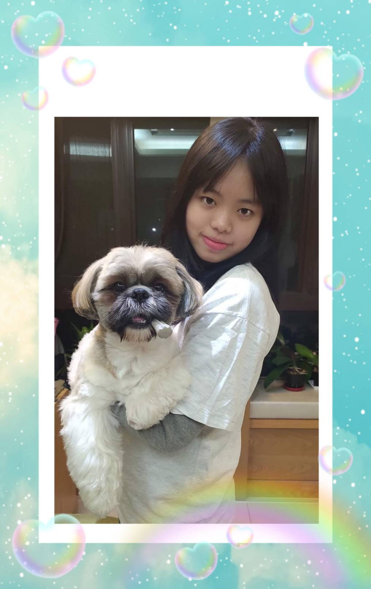
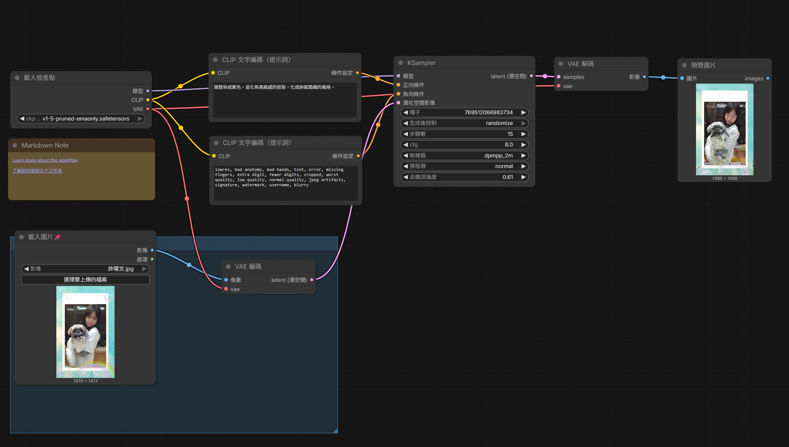
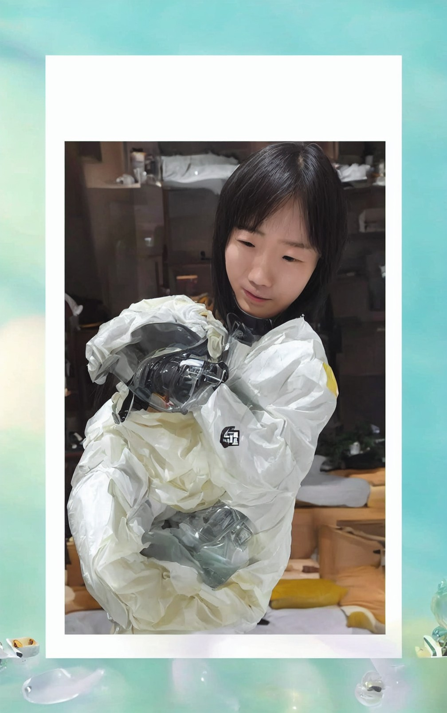
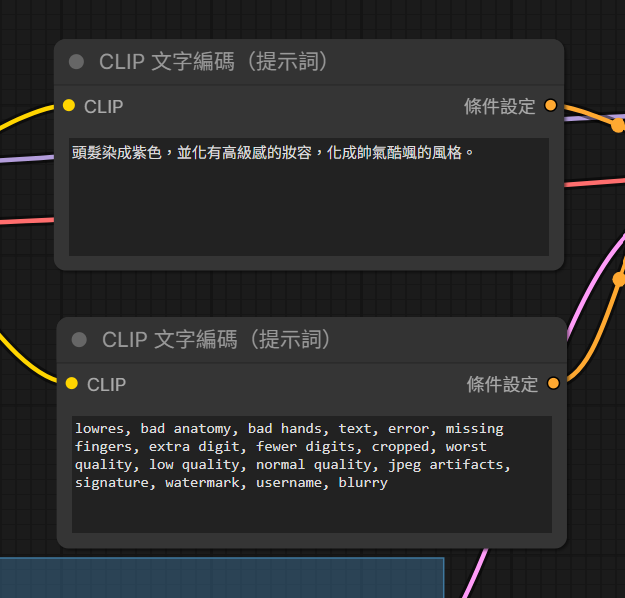

姓名：許曜文
原圖

生成的圖

完整工作流截圖

顯示使用的正反提示詞

這次的作業我遇到了很多困難，在安裝建立Comfy那邊沒有選到GPU， 從PPT下載的圖片也都一直執行不出正確的畫面，可能加上電腦的關係， 導致下載跟執行時間變得更久。雖然課堂上我都有問老師解決辦法， 但中間沒有課的時間還是浪費了很多。從下午上課都一直在執行生成圖片， 到整個晚上都還是跑不出來，電腦直接當機。 所以沒有準時完成作業，後來是借用同學電腦才完成，我覺得這次作業我做得並不好， 因為沒有時間再做修正、修改，我以後上課會更認真記下筆記， 遇到問題應該要直接先寫信問老師，並在截止時間快到時直接向同學借電腦做。 雖然我現在還是不太懂、還沒有學會AI生成圖片， 但我覺得能夠自己下指令給AI去改變圖片的樣子是一件很酷的事， 如果能夠學會如何運用，一定會非常有趣好玩。希望我繼續學習、多練習、 累積一些經驗後，以後的作業能夠更順利，能夠學會這門課。